Pooling
Sia 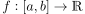 una funzione continua, e sia
la partizione di 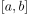 di ampiezza 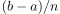.

Se è continua, allora 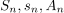 convergono uniformemente ad  su per 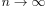.
su per 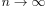.
Si denoti ora con  l’operatore che a 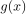 associa il corrispondente max/min/avg pooling: 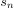, 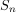,
l’operatore che a 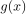 associa il corrispondente max/min/avg pooling: 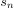, 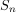,  ; sia
; sia
Se è continua, allora esiste 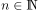 ed esiste 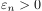 tali che
The previous property provides stability of the pooling under small input variations.
Pooling Layer in una rete neurale
Si consideri una rete neurale feedforward. Il layer  è detto di pooling se:
è detto di pooling se:
- il layer
 è diviso in
è diviso in  gruppi;
gruppi; - i neuroni del layer che appartengono alla stessa classe sono collegati ad un unico neurone nel layer ;
- ci sono neuroni nel layer , ciascuno dei quali ha funzione di attivazione 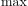.
Si vuole studiare l’informazione contenuta nel Layer di Pooling. Se i neuroni del layer producono come output delle variabili aleatorie
(si è supposto senza perdita di generalità che ogni gruppo contenga lo stesso numero  di neuroni), allora i neuroni del layer di pooling producono
di neuroni), allora i neuroni del layer di pooling producono

L’informazione contenuta nel layer è1
Siccome si è dimostrato che 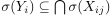
Dunque, se per ciascun gruppo del 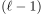-layer prendo un neurone qualsiasi 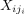, allora
La cosa è significativa, poiché consente di eliminare dei neuroni superflui ogni qualvolta che si presenta un layer di pooling.
Footnotes:
Con 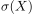 si intende la  -algebra generata da
-algebra generata da  .
.